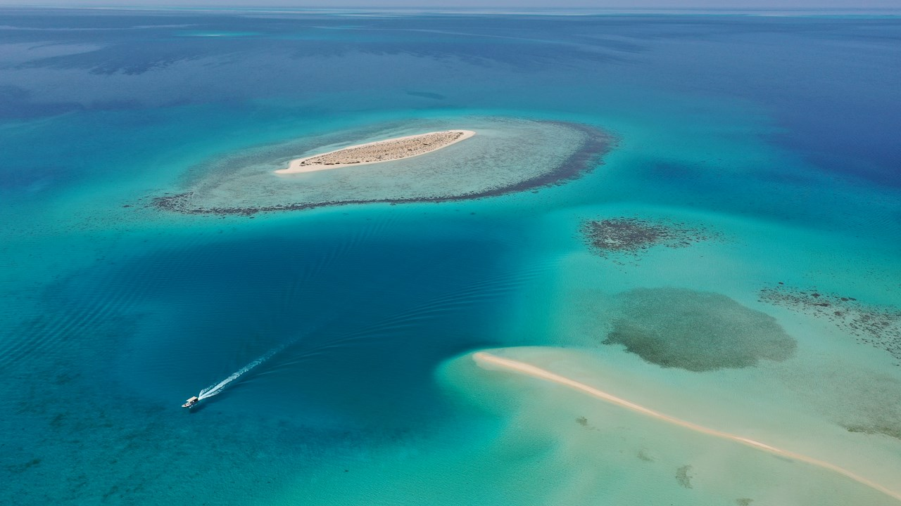

Intro
Hi! That’s an article about the Sinai peninsula. Trust me, it will be very interesting, LET”S GO! Sinai is the part of Egypt, which connects Africa and Asia. It lies between two gulfs of the Red Sea - Suez in the east and the Gulf of Aqaba in the west. From the north it is bounded by the Mediterranean Sea. The peninsula does not have exact boundaries, so different sources estimate its area differently.
-

When looking on the map, Red Sea is actually “hugging” the south part of Sinai Peninsula. It’s no wonder that the Red Sea is a major hot spot for scuba diving and snorkeling when you consider the rich variety of its underwater ecosystem. It is home to more than 1,200 species of fish, including 44 species of sharks. Nearly 20% of these are found only in the Red Sea. Divers can swim with brightly colored angelfish, butterflyfish and clownfish.
-
The Mount Sinai is well-known as holy place, where God has given Moses Ten Commandments. Now lots of people come here and climb to the peak. (P.s it’s not like an usual mountain hike. Climbing up to the summit usually takes 4-5 hours.) Visitors usually come early in the morning to see an amazing sunrise.
-
Well, desert biking pretends not to be a sight, but it is really cool activity when you dislike lying on the beach during whole vacation time. It is a 90% possibility that you will ride early in the morning, so don’t forget about setting a waking alarm!
- Sinai’s allure is legendary. Its spectacular landscapes, thriving flora and fauna, and unique history, the store of centuries, have long held sway in the imagination of millions. The high mountains and wadis of the peninsula’s south provide the fertile soil that feeds some of Egypt’s highest diversity of plants, while foxes, vipers, lizards, and tortoises are just some of the animals that make their home in the north, which is characterized by lagoons and vast dunes of soft sand.